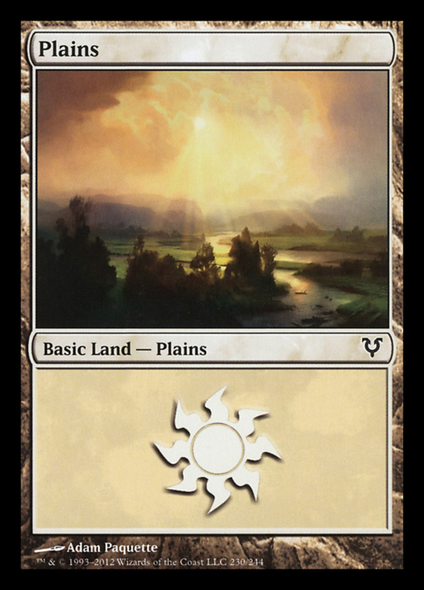
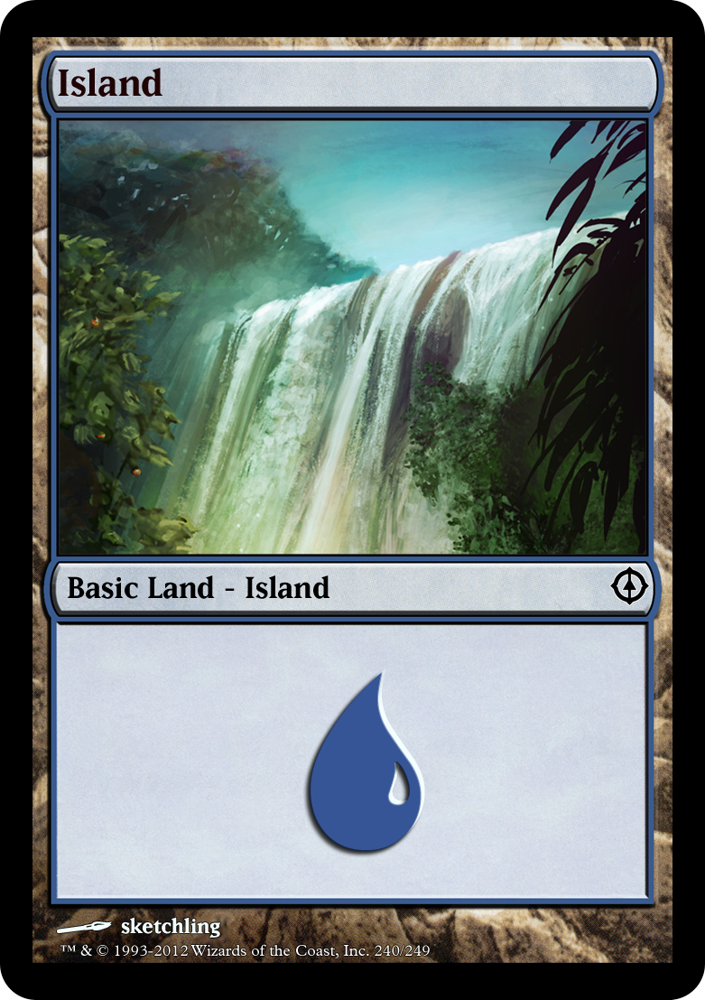
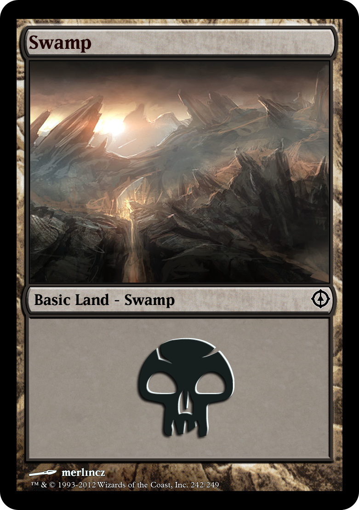
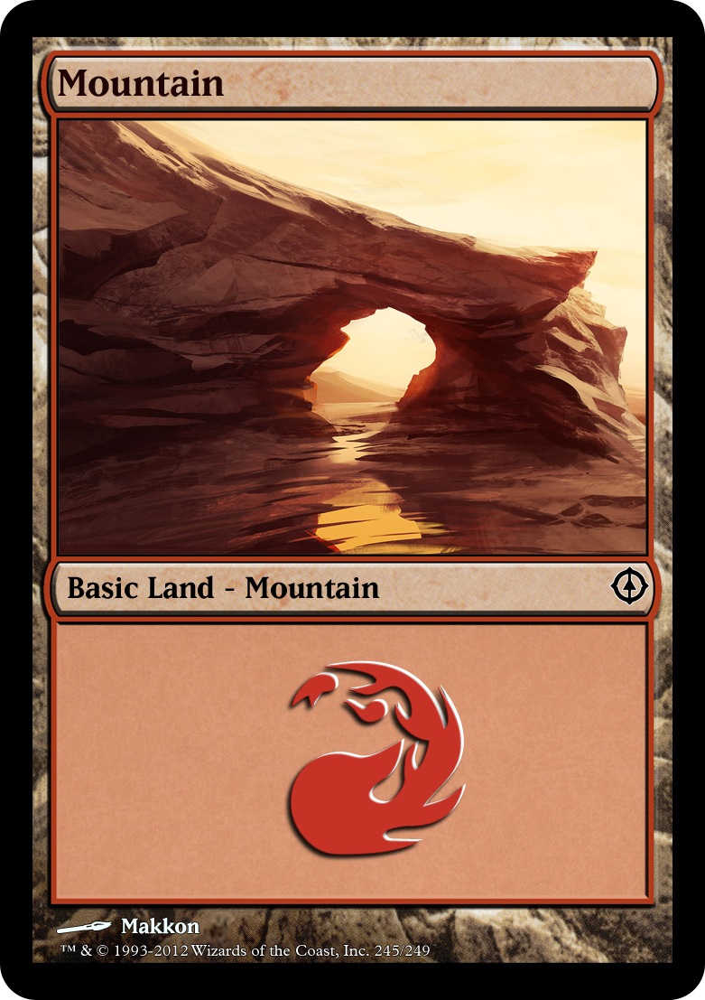
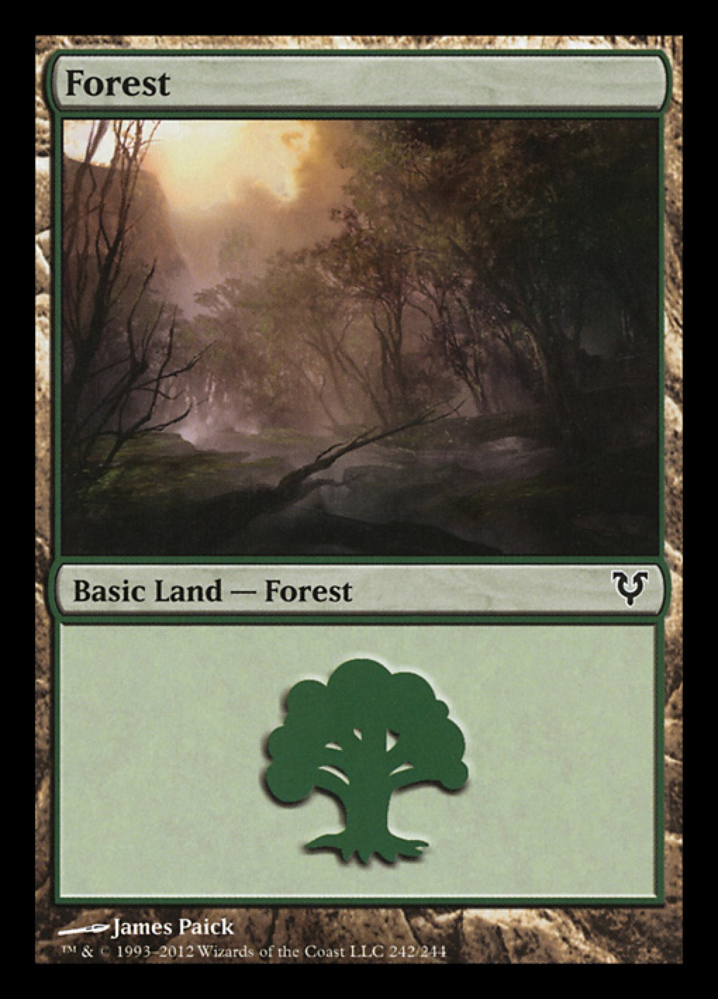

Magic: The Gathering (or MTG for short) has been around since 1993, and has a player base of over twenty million.
Getting into this massive franchise can be rather difficult, but I'm here to help you understand how to build a basic MTG deck!
To get started, I recommend buying the following from your local game store:
There are five colors in Magic and seven main Card Types. Below is a table that lists all of these
| Colors | White | Blue | Black | Red | Green | ||
|---|---|---|---|---|---|---|---|
| Card Types | Artifact | Creature | Enchantment | Instant | Land | Planeswalker | Sorcery |
It's generally a good idea for beginners to play one or two colored decks. Any more and problems can cause complications. Even professional players generally stick to two or three colors
Also, try to have some diversity in your card types. A nicely balanced deck will win more times than a poorly balanced one.
Before you decide which pre-made deck you should buy, you should figure out what colors fit your play-style the best. Each color specializes in different areas, so you should choose the color(s) that suit you the best!
White decks focus on protecting the player and the things the player controls. These decks are good for people with protective or defensive playstyles.
Blue decks focus on strategy, denying opponents their cards while strengthening themselves. These decks are good for players with a tacticle mindset and an affinity for the word "No".
Black decks focus on winning, even at the cost of their own victory. These decks play heavily on causing themselves harm in order to cause greater harm to their opponents. These decks are good for players who favor the high risk high reward ideology.
Red decks are faster paced and focus on winning quickly. These decks are good for people with an agressive playstyle.
Green decks focus on building strength and overwhelming their enemies. These are good for players who likes to grow their power.
